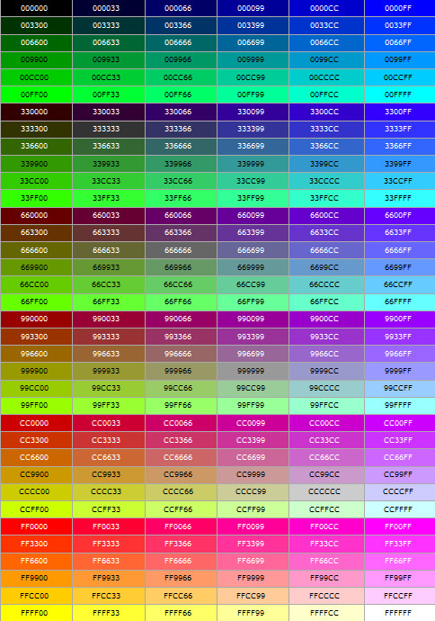
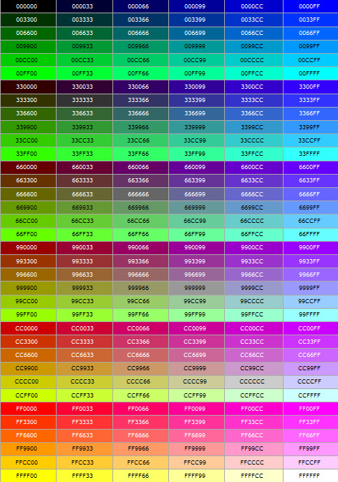

封面这张图太过鲜艳了，一般来说网页配色不会用这种，但是它真的很有意思，最终还是决定大胆地离经叛道一把。
我很喜欢这张图，虽说在网页上大面积铺会稍显浮夸，但是做壁纸还是很不错的。最主要的是它透露着一些色彩之间的关系和特性，还有大自然的神奇和多彩。图的来源还要从我大学时说起，因为总接触到图像方面的一些东西，有一天我突然就想，要是能做一张图，这张图里包含所有的色彩，当我要用颜色的时候，就拿吸管在桌面壁纸上一吸就好了。当然，既然要做壁纸，也不能太难看不是吗。这里就涉及到一个知识，色彩空间。色彩空间一般都是用三维表达的，这样表达出来很自然，就像每天用的取色器，一般都是一个二维平面加一个一维滑动条。而讲色彩空间一般都是下面这样的图（图一/图二）。当然，也不是不能展成二维的，如下。可是，你会拿它做壁纸吗？
 

后来我就做了这个图，这个图很好做，用一个灰阶图和一个彩虹图混合就OK了。当然，它只有不到40W色，跟真彩色1677W差很多，可以考虑一下为什么。重点是，那时候我并没有意识到它混完之后是这么个形态，这个结果比我料想的要惊艳得多。后来随着我接触到越来越多色彩方面的知识，甚至色彩空间转换、图像处理算法，对这张图的认识也越来越深刻，也越发觉得神奇，它总有新的特点能让我发现。
色彩是个很有意思的事情，两张图以各种方式混合，若不是经常接触一般人很难准确预测其结果。记得高中那时候自己学photoshop，图层混合那部分翻来覆去地看，看各种资料，也只理解了其中几个。不过回想起来也算努力没有白费，所有的东西都不会白学。要感谢小学的自己迷上了计算机，每周都期待着周五下午第一节的计算机课；要感谢初中的自己明智的决定开始大量接触计算机，折腾各种奇技淫巧；要感谢高中的自己开始专注于多媒体领域，修图做视频剪音频探究转码知识；要感谢大学的自己终于把计算机修成了正果，真正进入了计算机的职业领域。
前几天看CSS3，一下子就看到了图像混合的功能，哈哈，真是太棒了，这就意味着用CSS3代码就能直接写出这张图来，下面放上代码和效果。
.colorShow{width:384px;height:256px;background-image:linear-gradient(to bottom,#000,#fff),linear-gradient(to right,#f00,#ff0,#0f0,#0ff,#00f,#f0f,#f00);background-blend-mode:luminosity;}